Everything the unifiedmeds TikTok account needs: the profile, video covers, three on-screen text styles and two short storyboards. Every asset comes in two options, A (editorial, photo-led) and B (graphic, colour-led), shown on desktop and on a phone.
Current
The kit is approved for use. TikTok carries every content type after legal review (U-27); paid ads keep their own, stricter limits on the Ads page. The profile picture is Option B, the white u|m on Navy (R-93). Legal approves every post before it runs (U-30).
To confirm
Option A or B per asset (Avi). Lines are candidates; handles and links are placeholders. Photos are Pexels stand-ins, not approved, to replace (R-39, O-13). TikTok publishes no official safe zone: the numbers here are a careful middle of third-party measurements, so check them on a phone before the first post.
The profile, desktop and mobile.
The same account on tiktok.com and in the app. The grid crops every 9:16 cover to its centre 3:4, on both.
Option A · editorial, photo-led
unifiedmeds[@unifiedmeds]FollowMessage[0] Following · [0] Followers · [0] LikesMen’s health care, online. Reviewed by licensed providers.[unifiedmeds.com]
VideosLiked
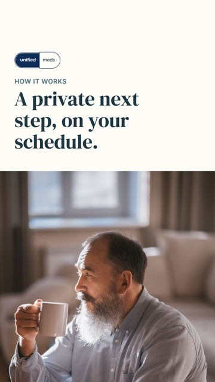
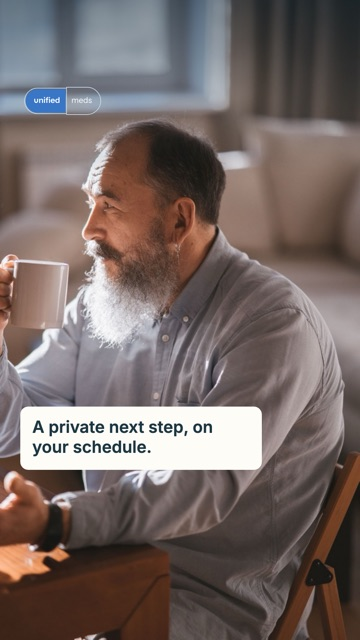
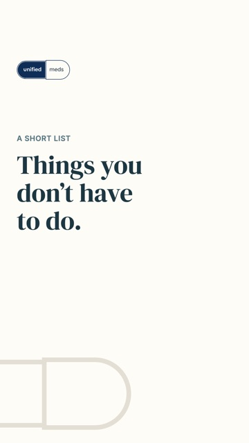
Desktop · tiktok.com · avatar 116 px, videos in a 6-column grid cropped to 3:4.
unifiedmeds
[@unifiedmeds][0]Following[0]Followers[0]LikesFollowMessageMen’s health care, online. Reviewed by licensed providers.
unifiedmeds[@unifiedmeds]FollowMessage[0] Following · [0] Followers · [0] LikesMen’s health care, online. Reviewed by licensed providers.[unifiedmeds.com]
VideosLiked
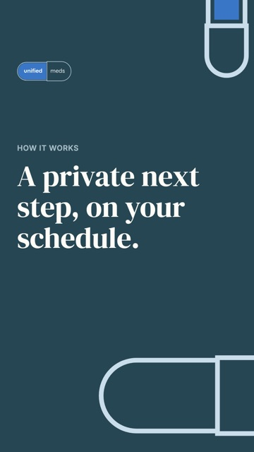
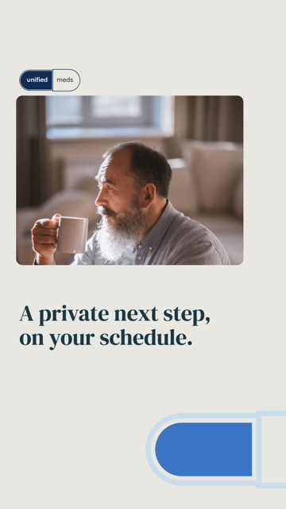
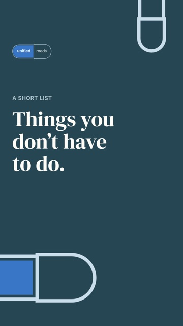
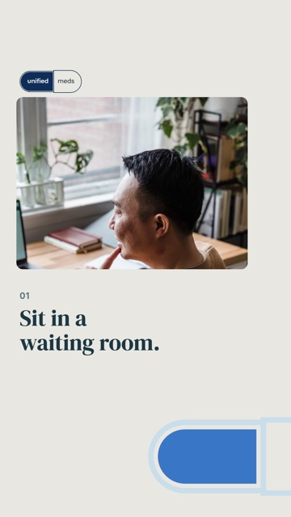
Desktop · tiktok.com · avatar 116 px, videos in a 6-column grid cropped to 3:4.
unifiedmeds
[@unifiedmeds][0]Following[0]Followers[0]LikesFollowMessageMen’s health care, online. Reviewed by licensed providers.
Each block: what it is for, the exact size, the safe zone (the dashed overlay; switch it off to see the art), and Option A beside Option B. Coral marks what the app covers; the blue dotted box is the 3:4 grid crop.
Profile picture
Shown as a circle everywhere: 116 px on desktop, 96 pt on a phone, 32 px next to comments. Nothing sits in the corners. The logo files are placed as they are, never redrawn.
Size
400 × 400 px (shown from 200)
Ratio
1:1, cropped to a circle
Type
PNG or JPG
Max file
Small, under 1 MB [check in the app]
Safe zone
The inscribed circle; the dashed ring
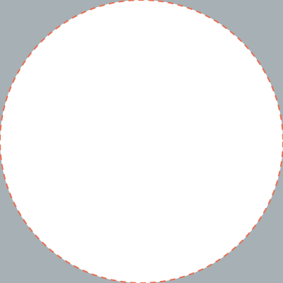
Option A · The “u|m” mark in Navy on Cream, the same in all six kits. Light and calm, reads at every size. · PNG · SVGOption B · The app icon, “u|m” on Navy (R-93). Reads at every size, also at 32 px. · PNG · SVG
Option A at 116, 96 and 32. The mark still reads at 32.
Option B at 116, 96 and 32. The capsule still reads at 32.
Video cover
The still that sells the video in the profile grid and in search. Chosen from a frame or uploaded. The title must survive two crops: the 3:4 profile grid and the feed UI.
Size
1080 × 1920 px
Ratio
9:16; grid shows the centre 3:4 (1080 × 1440)
Type
PNG or JPG (from the video)
Max file
Part of the video upload
Safe zone
x 60 to 920, y 240 to 1440: inside both the UI and the 3:4 crop
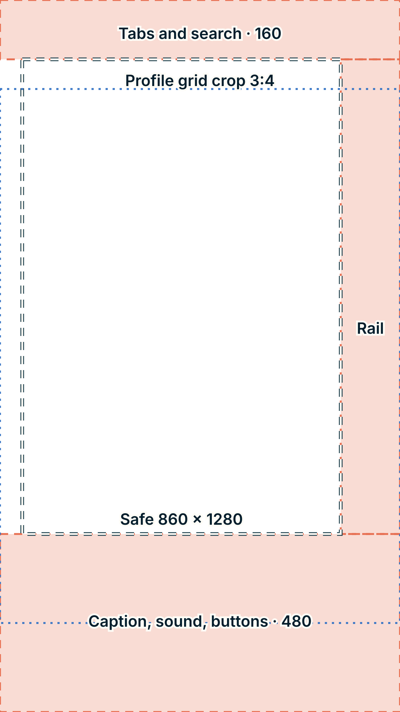
Option A · Paper panel, serif headline, the photo below. Faces stay out of the bottom 480. · PNG · SVGOption B · Deep Teal, the headline large, two capsules cropped by the edges. · PNG · SVG
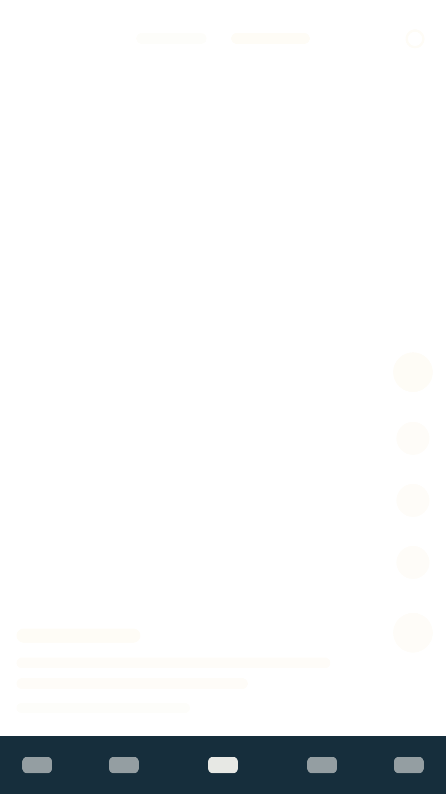
Desktop · player and profile grid · the grid shows the 3:4 centre crop; in the player the buttons move beside the video, the caption still overlays the bottom.
Phone · feed, option A · the rail and caption sit over the video.
Phone · feed, option B · the rail and caption sit over the video.
Title card
The first frame of a type-led video, or a chapter inside one. One idea, read in a second.
Option A · Paper box, radius 24, Inter SemiBold 50 in Teal Deep, over the photo. Sits on the bottom of the safe area. · PNG · JPG · SVGOption B · The photo framed in a 24 radius window, the statement in DM Serif 84 below. Mist or Paper ground. · PNG · SVG
End card
The last 2 to 3 seconds of every video. The only place with a button and the legal line.
Option A · Paper, the Primary seal, the line, one Yellow button, the legal line in Slate. · PNG · SVG
Option B · Deep Teal, the reversed seal, the same lines in Paper, the legal line in Wash Blue. · PNG · SVG
Two short video storyboards
Six static frames each, in both options, with the captions styled. Every spoken line is on screen. The seal is in the corner from the first frame; the video ends on the end card or on the last 2 seconds of a logo sting (R-101, C2 for short social openers). Faces never sit under a caption.
Length
15 s and 12 s
Frame
1080 × 1920, 9:16
Sound
Optional. Music bed and the sting sound; captions repeat every word
Text per frame
One line, nine words or fewer
Safe zone
Every caption inside x 60 to 920, y 160 to 1440
Storyboard 1 · How it works (15 s)
Option A · editorial, photo-led
01 · 0 to 2 sHook. One line, a real person at home.
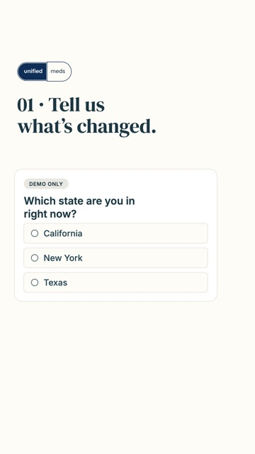
02 · 2 to 5 sStep 01. The assessment, a demo screen with the neutral state question (DEMO ONLY, R-69).
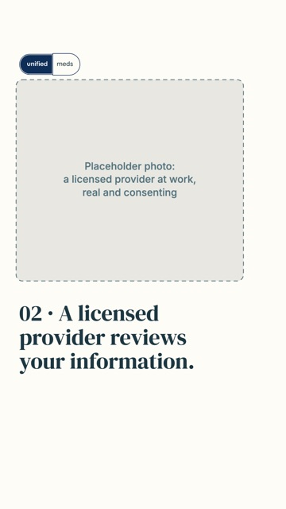
03 · 5 to 8 sStep 02. The provider: a real, consenting provider or no face.
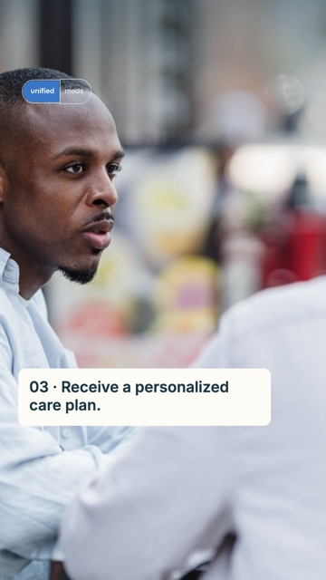
04 · 8 to 11 sStep 03. Life outside. No product, no result.
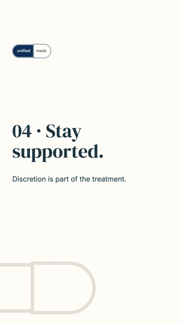
05 · 11 to 13 sStep 04, with the brand line, type only.
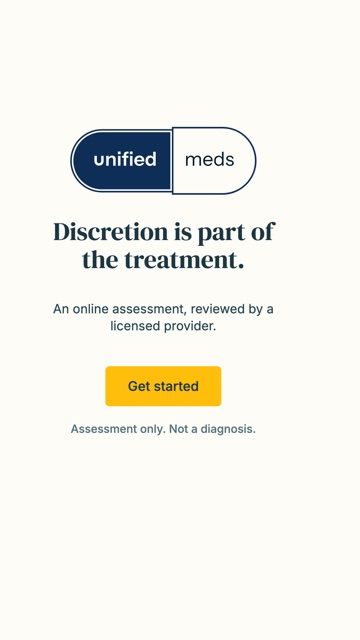
06 · 13 to 15 sEnd card: one Yellow button, the legal line.
Lines are candidates from the Ads page and the line bank, not approved copy. Storyboard 1, frame 3 needs a real provider photo with written consent; until then the placeholder stays (Photo · not approved · to replace).
Mobile and desktop differences.
TikTok is watched on a phone first. Sizes are at the 1080 px frame; on a 390 pt phone everything shows at about a third.
Asset
Desktop
Mobile
Keep inside
Smallest readable type
Profile picture
Circle, 116 px
Circle, 96 pt; 32 px in comments
The inscribed circle
Both options at any size, down to 32 px
Video cover
3:4 crop in a 6-column grid; full 9:16 in the player with the buttons beside it
3:4 crop in a 3-column grid; full 9:16 in the feed under the rail and caption
x 60 to 920, y 240 to 1440
Headline 100 px or larger
Title card
Full 9:16, centred in the player
Full screen under the UI
x 60 to 920, y 160 to 1440
Headline 84 px or larger
Lower caption
Same frame, caption still over the video bottom
Same, the TikTok caption sits just below it
Bottom edge at y 1410 or higher
48 px, Inter SemiBold
End card
Full 9:16
Full screen; the platform’s own buttons cover the bottom
Button and legal line above y 1440
Legal line 34 px
Captions and copy.
Discreet and plain. No prescription names in any social asset or caption, no result promised, no before and after. Every caption that offers the assessment carries the legal line.
Bio · option 1 (80 characters at most)Men’s health care, online. Reviewed by licensed providers.
58 characters.
Bio · option 2Online assessments, read by licensed providers. Discreet by design.
67 characters.
Caption 1A private next step, on your schedule. Tell us what’s changed, and a licensed provider reviews your information.
Assessment only. Not a diagnosis.
#unifiedmeds #menshealth #telehealth
Caption 2Things you don’t have to do: sit in a waiting room, explain it out loud, make it a whole thing.
Assessment only. Not a diagnosis.
#unifiedmeds #menshealth
Caption 3Discretion is part of the treatment. Nothing on your screen says more than you want it to.
Assessment only. Not a diagnosis.
#unifiedmeds
Hashtags
Three to five. Always #unifiedmeds, then broad tags only (#menshealth, #telehealth). Never a condition, a medicine, a body part or a trend that has nothing to do with the video.
Link
One link in the bio, to the homepage [unifiedmeds.com, O-01]. Never a product page, never a link in a comment. Business account settings to confirm before launch.
Rules for this channel.
Everything that matters sits inside x 60 to 920, y 160 to 1440. The rail, the caption and the tabs cover the rest.
Covers keep the headline inside the centre 3:4 (y 240 to 1440), so the profile grid shows it whole.
Every spoken word is on screen in the lower caption style; the video makes sense with the sound off.
One line per frame, nine words or fewer, at least 48 px at the 1080 frame.
The seal is in the top left from the first frame; the video ends on the end card or a logo sting (R-101).
Yellow only on the end card button, once per video (R-11).
The legal line is in the video, on the end card, whenever the assessment is offered (R-63).
No face under a caption, no shape under a word; at most two capsules per frame.
No medicine, result, symptom, price or before and after, in the video, the caption or the hashtags (R-58, R-65, R-67).
Files.
PNG at the exact size, plus the SVG source (fonts load from Google Fonts, photos are embedded). Rebuild everything with python3 -I assets/social/tiktok/make.py.